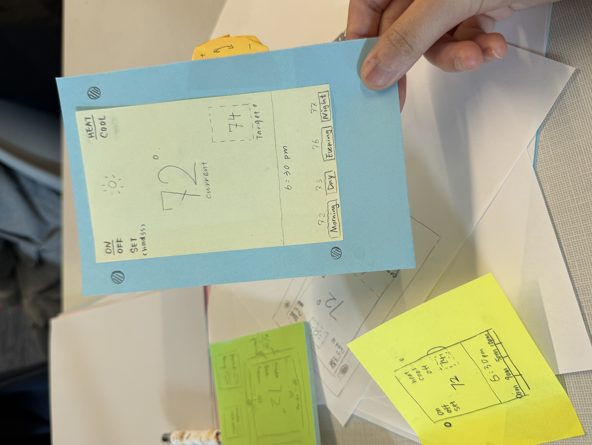
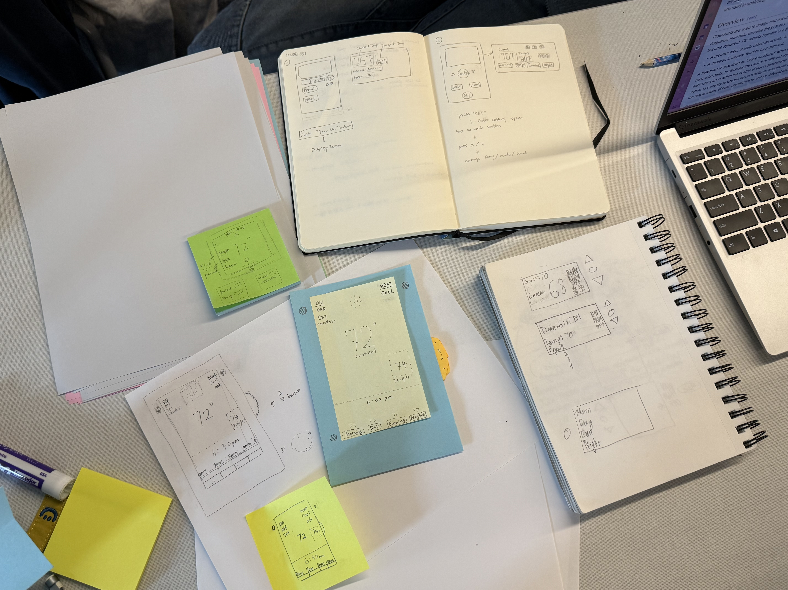
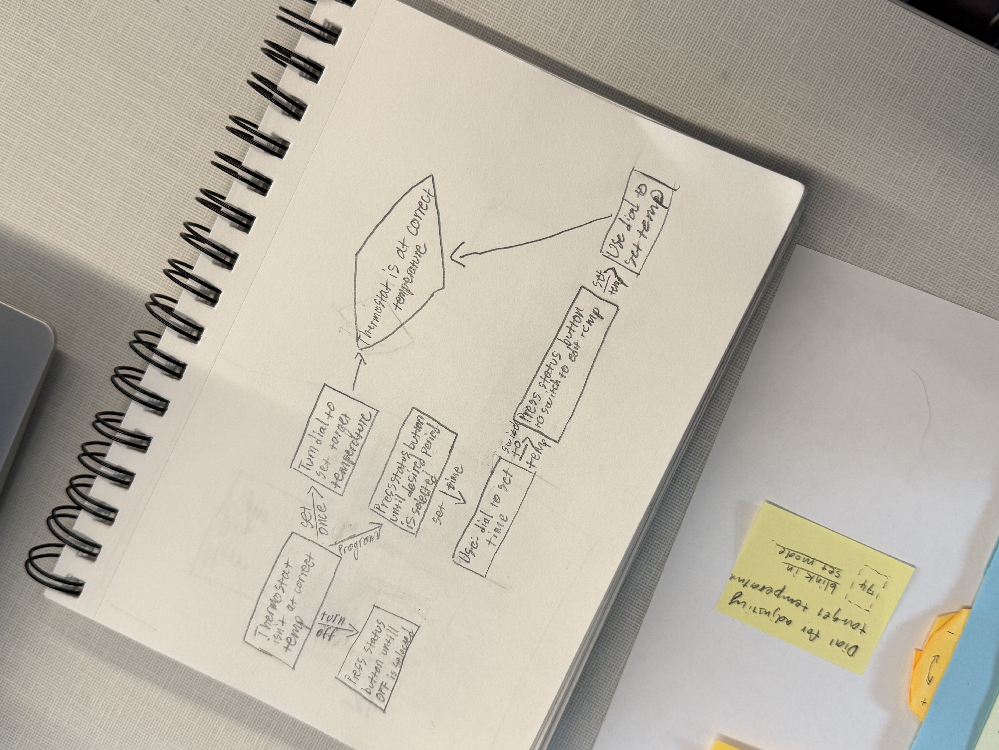

Paper Prototype Design Sprint
A fast paper prototyping exercise for a programmable home thermostat, focused on mode switching, daily scheduling, and clear temperature feedback in a low-cost interface.
Prompt
Design a thermostat interface that supports core home programming tasks.
Mode — Three operating modes: Off (system inactive), Run (actively controlling heat), and Set (programming target temperatures).
Period — Four daily time periods with independent target temperatures: Morning (wake-up to leaving for work), Day (away at work), Evening (home until bedtime), and Night (sleeping).
Status display — Shows current and target temperature, active mode (Off / Run / Set), and heat state (On / Off).
Program (Set mode) — Allows a unique target temperature to be assigned to each of the four periods.
Process
Sketch individually, combine strengths, then build fast.
We each sketched a few ideas individually, then shared them with the group and combined the strongest elements from each design.
I refined the selected direction and assembled the final prototype using paper and sticky notes, creating movable interface states that could support a quick role-play test.
Takeaway
Paper prototyping exposed the logic quickly.
The most valuable part of this sprint was how quickly a paper prototype exposed the underlying logic of the interface. Rather than getting caught up in visual polish, we could focus on whether the thermostat's modes and programmed periods made sense to someone actually trying to use it.
Prototype photos
Paper screens, testing setup, and flow diagram.



